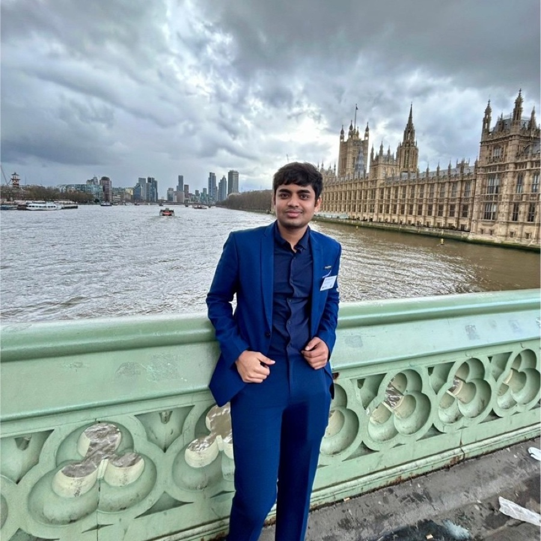

AI Engineer · Kyndryl
Anthony Breeganzo
Thomas
Production generative-AI systems,
and the evaluation that proves they work.
RAG
Multi-agent orchestration
Retrieval evaluation
Quant research

breeganzo.github.io